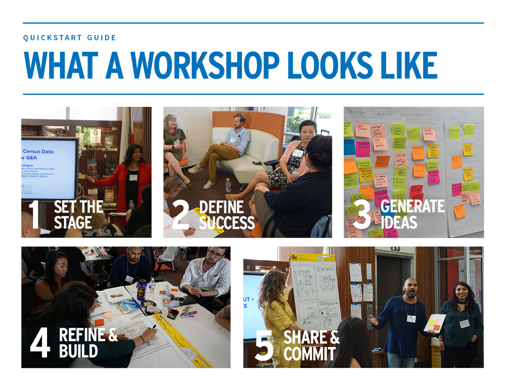

CENSUS WORKSHOP TOOLKIT
Collaborative problem-solving
Census workshops bring diverse people and organizations together to solve challenges through a series of creative exercises.
A step-by-step guide
The toolkit provides an overview of how and why pop- up workshops can help address census challenges and comprehensive instructions for running your own.


Planning the workshop
The toolkit includes a planning timeline, checklists, and guidance on running a workshop.
Running the workshop
Find sample agendas for workshops of different lengths, along with detailed descriptions of suggested activities based on design thinking, a method that’s common in the private sector, and increasingly so in the public sector. Use our print- friendly materials with your participants.